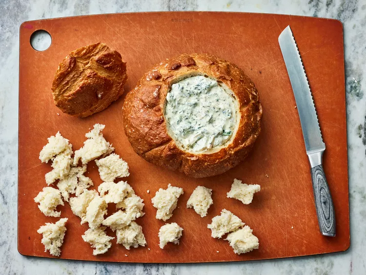

The Worlds Best Spinach Dip

This is the perfect no-cook, one-bowl summer dip to bring to a picnic or barbecue. Simply mix together sour cream, mayo, spinach, chopped water chestnuts, and soup mix, allow the flavors to meld in the fridge, then serve with bread, chips, or veggies. It's as easy as that and completely delicious—over 1,100 five-star reviews agree. My dad's spinach dip recipe. The entire family loves this flavorful spinach mixture served in a tasty bread bowl. Your family will love it, too.
Ingredients
- 1 (16 ounce) container sour cream
- 1 cup mayonnaise
- ½ (10 ounce) package frozen chopped spinach, thawed and drained
- 1 (4 ounce) can water chestnuts, drained and chopped
- 1 (1.8 ounce) package dry vegetable soup mix
- 1 (1 pound) loaf round sourdough bread
Directions
- Gather all ingredients.
- Mix sour cream, mayonnaise, spinach, water chestnuts, and dry soup mix together in a medium bowl. Chill in the refrigerator 6 hours, or overnight.
- Slice off the top of the sourdough round and pull out the soft interior, leaving a sturdy bread bowl.
- Fill with spinach mixture. Tear removed bread chunks into pieces for dipping.